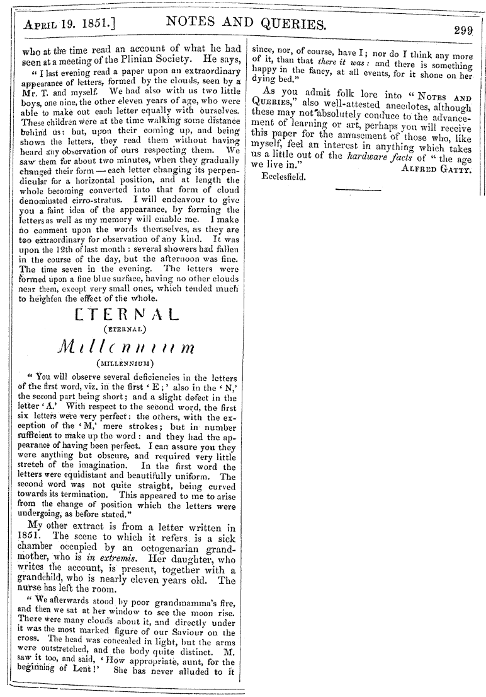

Notes and Queries, vol. 3 (77), 19 avril 1851, pp. 298-299 Paijmans, Theo: "1887 - three immense circles seen in the skies", Magonia Exchange, 5 mai 2007
| Home |
|---|
|  |
Strange appearances in the sky have not been without their ominous signification from the time that the greater and lesser lights were placed there and onward to the "star in the east" which announced our Saviour's birth, and the "light from heaven" which accompanied St. Paul's conversion. But the question is, whether there has since been any meaning in other like celestial illuminations? Some historical credit is claimed for the fiery sword, and armies fighting in the air, which preceded the siege of Jerusalem : for the cross of the Emperor Constantine : for the bow about the sun seen by Augustus Cæsar, when he took possession of the Roman empire: and for stars, or other heavenly lights, which have seemed to herald the births or deaths of illustrious personages. But are these stories to be believed? and, if they are, where is the line of credibility to be drawn? People cannot come together, and talk either on this subject, or on that of ghosts, but every one "hath a revelation, hath an interpretation." The poet, walking on the mountains, looked into the sky, and
"The appearance, instantaneously disclosed,
Was of a mighty eity ? boldly say
A wilderness of building, sinking far,
And self-withdrawn, into a wondrous depth,
Far sinking into splendour ? without end?"
The two following extracts are from private letters now before me. The first account was written in 1825 by a physician, still alive, and who at the time read an account of what he had seen at a meeting of the Plinian Society. He says,
"I last everning read a paper upon an extraordinary appearance of letters, formed by the clouds, seen by a Mr. T. and myself. We had also with us two little boys, one nine, the other eleven years of age, who were able to make out each letter equally with ourselves. These children were at the time walking some distance behind us: but, upon their coming up, and being shown the letters, they read them without having heard any observation of ours respecting them. We saw them for about two minutes, when they gradually changed their form ? each letter changing its perpendicular for a horizontal position, and at length the whole becoming converted into that form of cloud denominated cirro-stratus. I will endeavour to give you a faint idea ...
| Home |
|---|